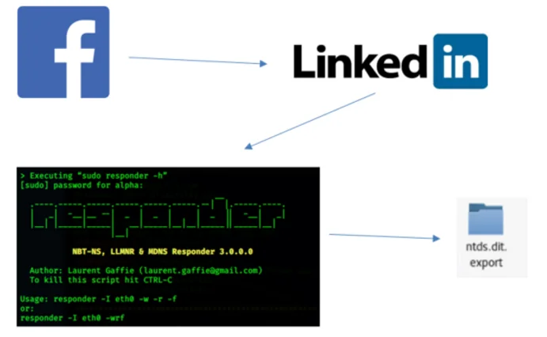
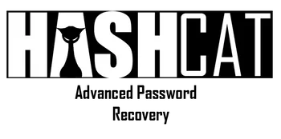
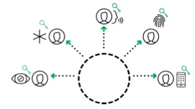
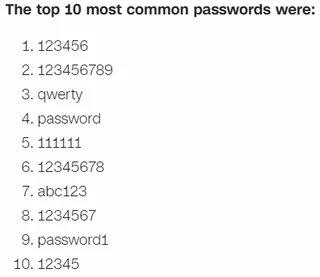
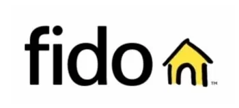

Well, first of all, what is OSINT- Open Source Intelligence is the collection and analysis of information gathered from public or open sources. Information can be gathered from sites like LinkedIn, Facebook, or Twitter. Email addresses, IP addresses, and Domain Names System (DNS) records can also be used to conduct OSINT. There are essentially endless opportunities for hackers to leverage Open Source Intelligence (OSINT) to gather information and use it to gain access to organizations of all size. By properly interpreting and aggregating the intelligence of multiple sources attackers glean tremendous insight into the operations of targeted organizations.
The sophistication necessary to attack a well-designed and maintained system is far rarer than what it takes to attack people, so people are routinely leveraged to bypass these increasingly complex and robust security measures technology enables on the systems. Let’s look at a scenario of a past life where I used OSINT to bypass security measures and compromise passwords.
Scenario:
During one Penetration Testing engagement I was able to look at a company’s Facebook profile and find pictures of a company sponsored golf outing. While seemingly innocuous, the pictures allowed me to see the organization as a whole and later put names to faces. I then perused the comments, matched faces to names, and leveraged that information to gather more detailed professional information off LinkedIn. Within a couple of hours, I gathered enough intelligence on the company to build a backstory that I used to obtain an access badge and access to a conference room. I plugged into the network and attacked the passwords by captured hashes- culminating in pulling the NTDS file with a few hundred accounts to crack offline.

My attack was moderately low tech. However, I leveraged OSINT to exploit the human element rather easily. No great level of effort or sophistication was necessary. Even as machines are better protected, humans remain susceptible. The key is to take as away as much of the responsibility from people as possible, and leverage technology to protect people from themselves.
Passwords are hard to remember, so they are often constructed poorly which means they are easily cracked using programs like hashcat.

They can also readily be extracted from a fair number of people by simply asking or guessed based on previously gleaned OSINT. Once the password is discovered by a malicious entity, this non-authentic entity can masquerade as the authentic user and subvert many of the remaining layers of security. Eliminating password-based authentication does not completely prevent OSINT techniques, it does lessen the impact of using the gathered data on users. People would still be able to give up pieces of information but removing their ability to “give away” their authentication would mitigate attackers’ ability to capture all the bounty a user’s privileges entitle them.
In order to mitigate the OSINT advantage, the current password centric authentication paradigm must change in leu of decentralized, certificate-based, and biometrically enhanced authentication.
Decentralized Authentication removes user secrets such as passwords from the enterprise and keeps them safely sandboxed in the Advanced Trusted Environment on the user’s mobile device. The user’s private key never leaves the device, removing the concern of interception of the user’s secret. Decentralization also eliminates password repositories eliminating mass credential theft.


Passwordless and certificate-based authentication go hand in hand. Take the vitally important task of securing authentication out of our all to fickle human hands and allow the underlying purpose-built security mechanisms to do their job. According to CNN Business, the three most common passwords are respectively “123456”, “123456789”, and “qwerty”[1]. Factoring large prime numbers and other such algorithmic calculations create much better secrets than are stored on many sticky notes, and once user generated passwords are removed from the equation, there is no longer anything for the user to divulge.
Finally, biometrics are readily available in most of the world’s smartphones, however, smart phones can be left unlocked and unattended which could lead to someone other than the phones owner accessing accounts on the device. That is why biometric use is paramount to eliminating that fractional remaining degree of uncertainty. Biometrics positively attribute a person to a certificate and then the certificate can positively attest the user’s identity to services. What’s more, people are far less likely to give up a body part than a password.
Fast Identity Online (FIDO) authentication enables all three of the core tenants necessary to mitigate OSINT based attacks on passwords. FIDO leverages decentralized-certificate based authentication, uses two-factor authentication (2FA) authentication at a minimum, and when implemented well, uses a full three factors without passwords.

Think back to the first scenario and look at a final scenario where well implemented FIDO authentication is used to mitigate OSINT impact:
Scenario:
An attacker discovers usernames leveraging OSINT and attempts to spray passwords to a login portal. In this case, there are no passwords to spray and the attacker does not have the private key nor the biometric data of the user, so the attacker would be unable to gain any access. With stronger passwordless biometrically enhanced authentication, password spraying attacks are eliminated, and there is virtually no likelihood of account compromise. The impact is lessened as well due to the decentralized nature of FIDO.
Technology is layered and is becoming more effective and better protected; however, people are generally still susceptible to many of the same attacks as always and bypass much of the newfound security. Eliminating the password in favor of certificates is a quintessential piece of a solid authentication model and can limit the damage of OSINT based attacks. By controlling authentication, we are limiting the damage caused by OSINT enabled attacks
against users.